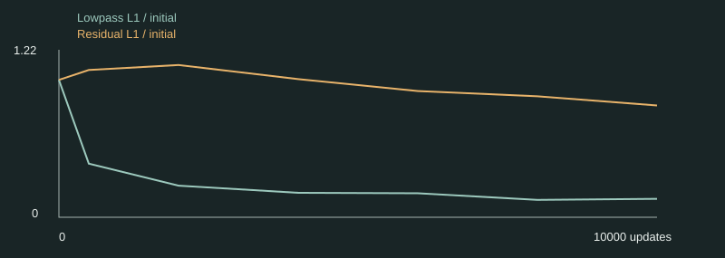
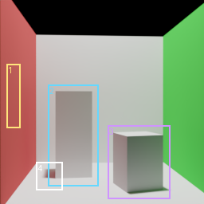
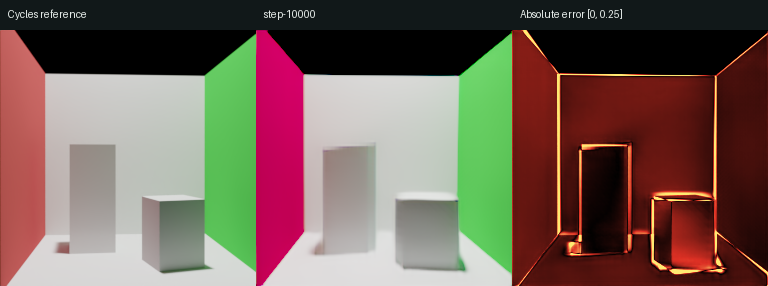
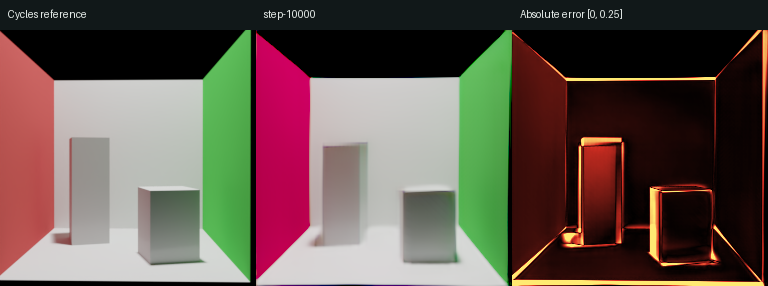
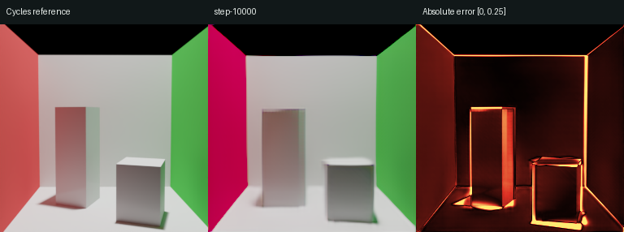
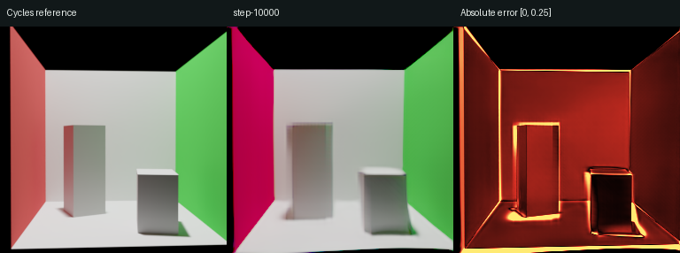

Cornell 场景族训练记录
作者 RF1 公开代码；从头初始化；256×256；4 张 RTX 2080 Ti；每步 4 个场景样本、8 张图像。
状态：训练中断，等待 GPU 恢复；最近日志记录 10301 次更新。初始预算 30,000 步。
验证结果
32 个完整配置、128 张图像。按配置留出；此页没有使用测试集。PSNR / SSIM 在 Reinhard 线性 RGB 上计算，data_range=1。梯度 L1 衡量相邻像素差分的偏差，越低越好。
完整验证指标
| 模型 / 步数 | 图像数 | PSNR / dB | SSIM | 梯度 L1 |
|---|
| initial | 128 | 8.11 | 0.1269 | 0.00602 |
| pretrained | 128 | 8.63 | 0.2251 | 0.00622 |
| step-00500 | 128 | 14.59 | 0.6286 | 0.00812 |
| step-02000 | 128 | 17.53 | 0.6748 | 0.00830 |
| step-04000 | 128 | 19.29 | 0.7286 | 0.00865 |
| step-06000 | 128 | 19.55 | 0.7881 | 0.00777 |
| step-08000 | 128 | 21.02 | 0.8018 | 0.00808 |
| step-10000 | 128 | 21.46 | 0.8163 | 0.00773 |
initial 为本次随机初始化；pretrained 为固定官方权重。课程训练采用缩减批量与训练预算，不等同于论文完整规模复现。
训练在约 10,300 步出现 NCCL 超时，进程阻塞于 NVIDIA 驱动锁。第 10,000 步模型、优化器及调度器检查点已保留；恢复 GPU 后从该检查点续训。
当前梯度误差尚未优于初始化；像素指标的改善不足以证明物体结构已恢复，仍需继续训练并检查固定区域的边缘与形状。
中间检查点：先学到了什么
固定四个验证配置的视角 0，展示早期（500 步）、中期（6000 步）和最新结果。完整检查点继续归档。曝光、颜色变换与相机保持一致；下表为这四张图的探索性诊断，不代表完整验证集。
四个固定视角中，500 步的低通误差为初始化的 39.0%，残差误差为 107.2%；到 10000 步，分别为 13.4% 和 81.4%。500 步时的改善主要出现在低通部分；后续细节变化见下表。
其余固定视角对照图 · 单视角报告插图
误差曲线、区域测量与 bias 分析

高斯低通 σ=4 像素；残差＝原图−低通。曲线分别除以各自的初始化误差。两项不是正交分解，不能相加解释为总能量。| 更新步数 | 低通 L1 | 残差 L1 | 高立方体区域梯度 L1 | 地面阴影区域 L1 |
|---|
| 500 | 0.1249 | 0.0272 | 0.0063 | 0.1634 |
| 6000 | 0.0559 | 0.0233 | 0.0093 | 0.0782 |
| 10000 | 0.0429 | 0.0207 | 0.0102 | 0.0672 |
固定区域与数值定义

validation_0000：1 左墙、2 高立方体及边缘、3 矮立方体及边缘、4 地面阴影。区域依据参考图在查看早期结果后选定，之后对全部检查点固定；它们不参与检查点选择。
区域坐标、RGB 有符号偏差与完整诊断
怎样解释 bias
观察学习顺序时，分别检查大面积颜色、物体轮廓和阴影误差，避免把亮度改善等同于结构恢复。若低通误差先下降，可将低频优先作为一种解释；Rahaman 等（ICML 2019）提供了频谱偏差的相关研究。本次仅有一条训练轨迹，仍受数据分布、损失、初始化及学习率预热共同影响，不能据此证明 RenderFormer 的普遍归纳偏置，也不能完成统计意义上的偏差—方差分解。
最新结果与误差

step-10000：参考 / 预测 / 绝对误差validation_0008 · 视角 0

step-10000：参考 / 预测 / 绝对误差validation_0016 · 视角 0

step-10000：参考 / 预测 / 绝对误差validation_0024 · 视角 0

step-10000：参考 / 预测 / 绝对误差对照条件
所有图统一使用 EV0、Reinhard 和 sRGB；绝对误差色标固定为 [0, 0.25]。四个展示配置在训练前选定，均取视角 0，不按结果筛选。
验证集用于选检查点。最终测试及结构细节检查完成后，才写最终效果结论。受限 Cornell 场景族的结果不代表原生 Sponza 等复杂场景能力。